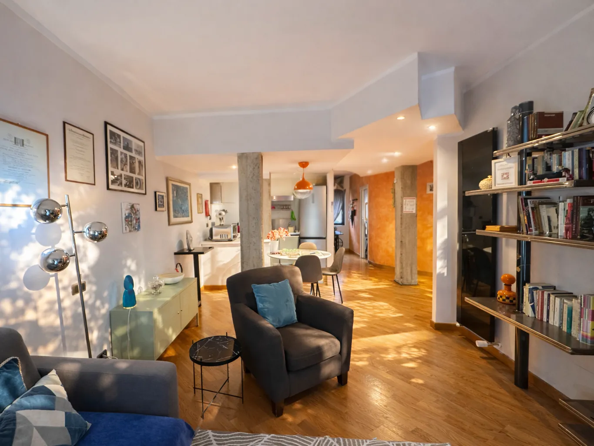
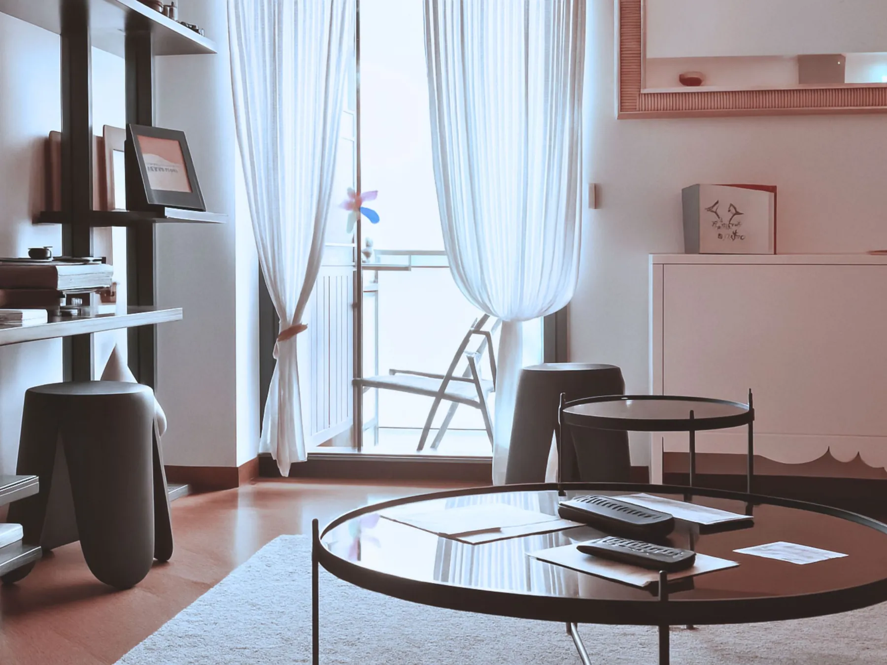
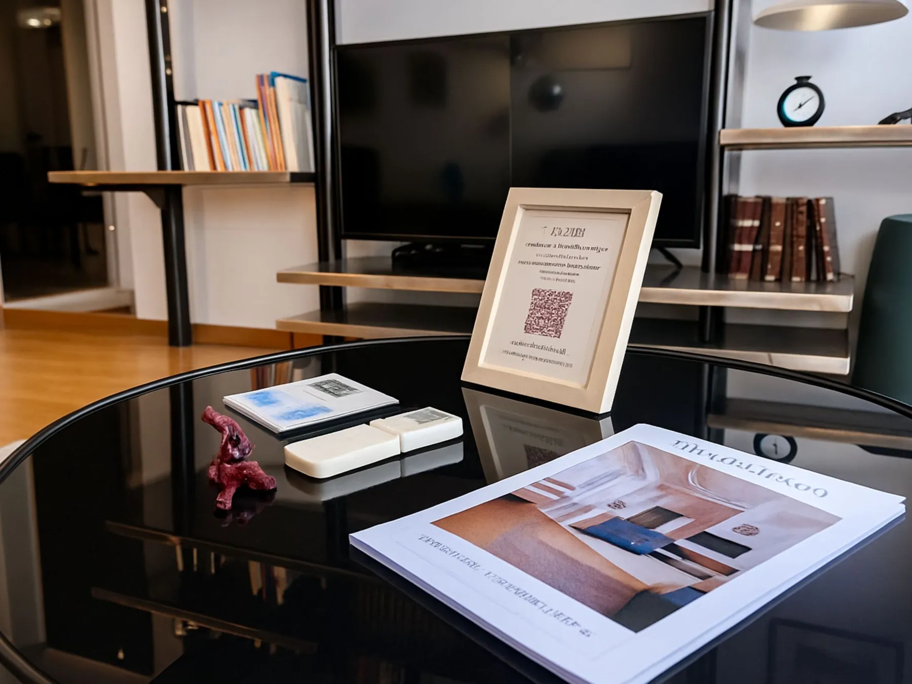

Stile contemporaneo · Luce · Comfort
L’appartamento
Un loft raffinato al quinto piano di un palazzo d’epoca, a due passi da San Pietro.
Fotografie
Uno sguardo all’appartamento






Vatican Glamorous
Un loft contemporaneo vicino al Vaticano
Casa vacanze ad uso esclusivo, rinnovata di recente con cura in stile loft contemporaneo, ideale per famiglie e amici fino a 4 persone.
Il nome “Passeggiata del Gelsomino” richiama il vicino e suggestivo viale che conduce allo Stato della Città del Vaticano.
Siamo così vicini al centro che preferirai raggiungere ogni meta a piedi.

Zona giorno e cucina
Spazi autentici.
Soggiorni indimenticabili.
Un ampio soggiorno in stile loft con divano letto king-size e una cucina completa di tutti gli elettrodomestici.
- Cucina completa
- Lavastoviglie
- Lavasciuga
- Wi‑Fi
- Smart Monitor con Netflix e app streaming
- Amazon Alexa
- Aria condizionata automatica
- Scrivania per smart-working

All’aperto
Lo spazio all’aperto
Colazione all’aria aperta
Un piccolo balcone tutto per voi, attrezzato con tavolino e sedute: perfetto per la colazione in due o in quattro, o per un aperitivo al tramonto con vista sui tetti del quartiere. L’appartamento ha anche un secondo balcone.
- Tavolino per la colazione in 2–4
- Sedute da esterno
- Luce naturale tutto il giorno
- Affaccio sul quartiere

Dettagli
Caratteristiche della casa
- 5° piano con ascensore
- Palazzo d’epoca
- Posto auto gratuito sotto il palazzo
- 1 camera matrimoniale king-size
- Ampio soggiorno con divano letto king-size
- 1 bagno completo
- Cabina armadio
- 2 balconi
- Culla e passeggino
- Animali di piccola taglia ammessi
- Biancheria, asciugamani e kit bagno inclusi
- Nel centro di Roma, accanto al Vaticano
- Vicino alla stazione Roma San Pietro
- Vietato fumare in casa
Filmato originale